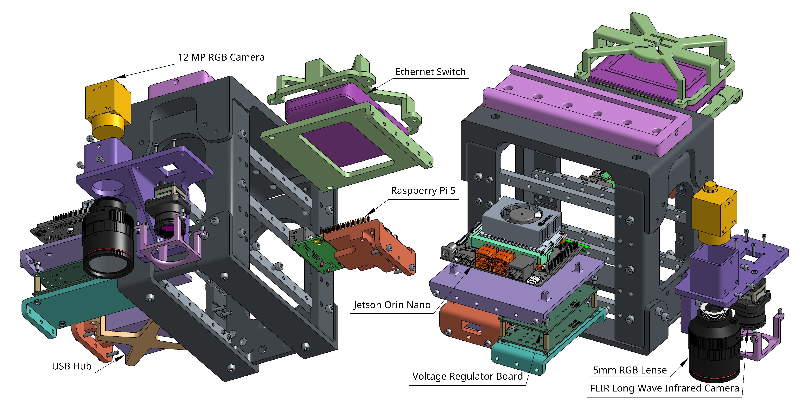

DJI Platform


In disaster zones, time is critical. Our goal was to develop a UAV platform deployable in any terrain to rapidly survey areas affected by conflict or natural disasters and identify people in distress. By using an expendable aerial vehicle instead of sending in human rescuers, we aimed to reduce risk to unpredictable personnel while also minimizing setup time. The system is designed to be modular, lightweight, and adaptable. This enables fast deployment and real-time situational awareness in unpredictable conditions.
Mechanical Lead of this project, my main responsibilities is designing the mechanical fixtures and structures that integrates the electronic payloads with UAV platforms available to our lab.
Integrated avionic components essential for UAV guidance, navigation, and control (GNC), and implemented camera triggering with GPS-based time stamping.
This mount-plate and dovetail are fastened to the chassis of the DJI drone, it allows for different payloads to slide into and fasten itself to it, this modularity allows for effortless mounting and dismounting and swapping of differeent payloads.
This payload structure integrates components essential for camera interfacing and onboard processing. The Raspberry Pi 5 manages ROS packages, while custom voltage regulator PCBs supply 5V and 9V power to individual modules. The Jetson Orin Nano handles computer vision tasks, including object detection and labeling.
This is the primary UAV platform dedicated to search and rescue, it uses VTOL motors to take off vertically, and it transitions to fixed wing flight with a frontal pull motor.
Mounting all the components of the Imaging payload into the fuselage of the UAV airframe, each with their own modular mount for easy installation and removal.
A power distribution board is used to source power from the battery and distributes it across multiple components. The battery is stored in the front of the airframe, and directly underneath the PDB, the hinge allows for the battery to be installed or removed.
The primary manufacturing method was FDM 3D printing, using a Bambu Lab P1S. We printed our structural components in ABS due to its strength and thermal resistance.